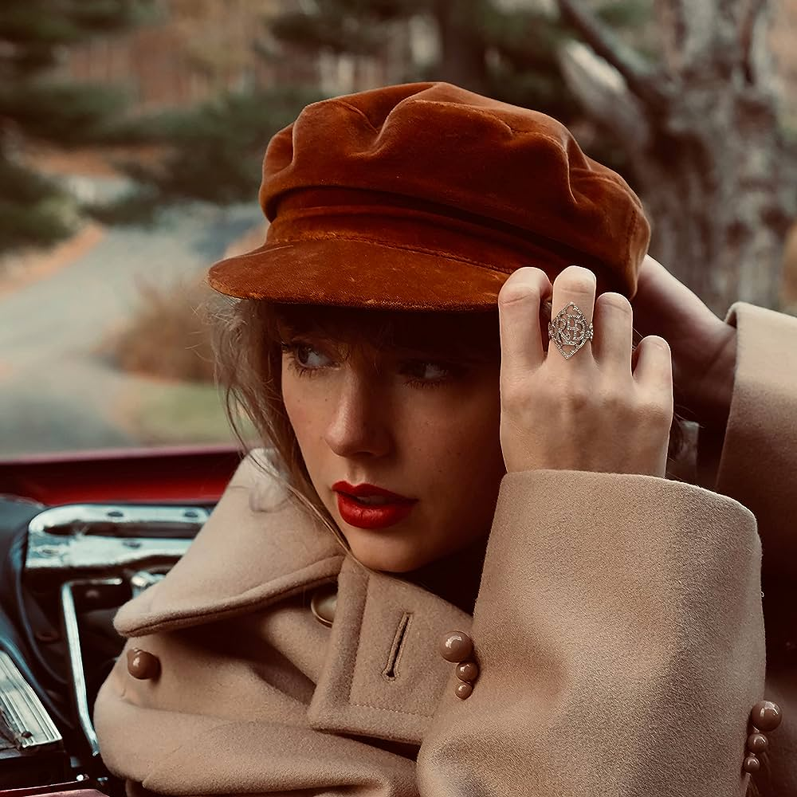
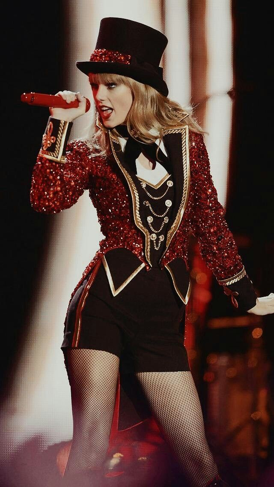

Explorando "Red": Obra-Prima Emocional de Taylor Swift
Lançado em 2012, "Red" é um álbum que reflete o crescimento de Taylor Swift como artista e pessoa. Este álbum marcou uma mudança significativa em relação ao seu trabalho anterior, incorporando uma mistura de influências pop e country.
A faixa-título do álbum, "Red," encapsula sua essência—emoções vívidas e narrativas apaixonadas. "Red" captura de maneira bela o espectro de emoções que vêm com o amor, a desilusão amorosa e a autodescoberta.
A habilidade de composição de Swift se destaca em sucessos como "I Knew You Were Trouble" e "All Too Well." Essas músicas mostram sua capacidade de transmitir sentimentos e experiências complexas por meio de suas letras.
O reconhecimento crítico e o sucesso comercial do álbum solidificaram a posição de Taylor Swift como uma potência musical. Com "Red," ela continuou a romper barreiras e redefinir sua sonoridade.
Anos depois, "Red" permanece um favorito dos fãs, nos lembrando da capacidade da artista de criar músicas que ressoam profundamente e evoluem com a jornada de sua vida.